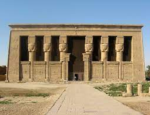
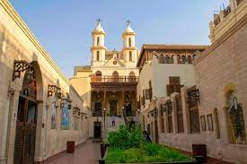
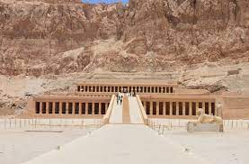

المعالم المصرية التي تحكي قصصا منذ آلاف السنين، فتعال نتعرف عليها
معبد الكرنك

معبد الكرنك أو مجمع معابد الكرنك
الذي يُشتهر باسم معبد الكرنك هو مجموعة من المعابد والبنايات والأعمدة
حيث استمرت عمليات التوسع والبناء منذ العصر الفرعونى وتحديدا ملوك الدولة
الوسطي حتى العصر الرومانى في الأقصر في مصر على الشط الشرقى
المعبد بُنى للثالوث الإلهى أمون (أمون رع في العصر الحديث)
وجته الالهة موت وابنهم الاله خونسو؛ ولكل منهم معبد تابع لمجمع معابد الكرنك
أحياناً يعنى السائحين وغير المتخصصين بمعبد الكرنك فقط المعبد تابع لأمون آى أمون رع
سُمِى المعبد بهذا الاسم نسبة لمدينة الكرنك وهو اسم حديث محرف عن الكلمة العربية خورنق
وتعني القرية المحصنة والتي كانت قد اطلقت على العديد من المعابد بالمنطقة خلال هذه الفترة
بينما عرف المعبد في البداية باسم «بر امون» أي معبد آمون أو بيت آمون
وخلال عصر الدولة الوسطى أطلق عليه اسم إبت سوت والذي يعني الأكثر اختيارًا
من الأماكن (ترجمت احيانًا بالبقعة المختارة)
وقد عثر على هذا الاسم على جدران مقصورة سنوسرت الأول في البيلون الثالث
كذلك عرف المعبد بالعديد من الأسماء منها نيسوت-توا أي عرش الدولتين وإبيت إيسيت أي المقر الأروع
المتحف المصري الكبير

.المتحف المصري الكبير يقع على بعد أميال قليلة من غرب القاهرة بالقرب من أهرام الجيزة
.ويتم بناؤه ليكون أكبر متحف في العالم للآثار، ليستوعب 5 ملايين زائر سنويًا
بالإضافة لمباني الخدمات التجارية والترفيهية ومركز الترميم والحديقة المتحفية التي
.سيزرع بها الأشجار التي كانت معروفة عند المصري القديم
.وقد أطلقت مصر حملة لتمويل المشروع، كان أبرز مساهميها وكالة جايكا اليابانية بقروض ميسرة
،ومن المقرر أن يضم المتحف أكثر من 100,000 قطعة أثرية من العصور الفرعونية، واليونانية والرومانية
.مما سيعطي دفعة كبيرة لقطاع السياحة في مصر
معبد أبو سمبل

أبو سمبل هو موقع أثري يقع على الضفة الغربية لبحيرة ناصر
نحو 290 كم جنوب غرب أسوان
وهو أحد مواقع «آثار النوبة» المدرجة ضمن قائمة اليونسكو لمواقع التراث العالمي
والتي تبدأ من اتجاه جريان النهر من أبو سمبل إلى فيلة (بالقرب من أسوان)
المعابد المزدوجة كانت أصلا منحوتة من الجبال في عهد الملك رمسيس الثاني
في القرن الثالث عشر قبل الميلاد
كنصب دائم له وللملكة نفرتاري، للاحتفال بذكرى انتصاره في معركة قادش
ومع ذلك، ففي 1960 تم نقل مجمع المنشآت كليا لمكان آخر
على تلة اصطناعية مصنوعة من هيكل القبة، وفوق خزان السد العالي في أسوان
وكان من الضروري نقل المعابد لتجنب تعرضها للغرق خلال إنشاء بحيرة ناصر
وتشكّل خزان المياه الاصطناعي الضخم بعد بناء السد العالي في أسوان على نهر النيل
ولا زالت أبو سمبل واحدة من أفضل المناطق لجذب السياحة في مصر
المسجد الأزهر

،المسجد الأزهر هو أهم مساجد مصر على الإطلاق
وأحد المعاقل التاريخية لنشر وتعليم الإسلام كذلك هو واحد من أشهر المساجد الأثرية في مصر
،والعالم الإسلامي، وجزء من مؤسسة الأزهر الشريف يعود تاريخ بنائه إلى بداية عهد الدولة الفاطمية في مصر
،بعدما أتم جوهر الصقلي فتح مصر سنة 969م
،وشرع في تأسيس القاهرة قام بإنشاء القصر الكبير وأعده لنزول الخليفة المعز لدين الله
،وفي أثناء ذلك بدأ في إنشاء الجامع الأزهر ليصلي فيه الخليفة
،وليكون مسجداً جامعاً للمدينة حديثة النشأة أسوة بجامع عمرو في الفسطاط وجامع ابن طولون في القطائع
،كذلك أعد وقتها ليكون معهداً تعليمياً لتعليم المذهب الشيعي ونشره، فبدأ في بناؤه في جمادي الأول 359هـ/970م
،وأتم بناءه وأقيمت أول جمعة فيه في رمضان سنة 361هـ /972م
وعرف بمسجد القاهرة ورغم أن يد الإصلاح والترميم توالت عليه على مر العصور
.فغيرت كثيراً من معالمه الفاطمية إلا أنه يعد أقدم أثر فاطمي قائم بمصر
.وقد اختلف المؤرخون في أصل تسمية هذا الجامع، والراجح أن الفاطميين سموه بالأزهر تيمناً بفاطمة الزهراء ابنة النبي محمد
معبد دندرة

مجمع معابد دندرة أو معبد دندرة هو مجمع معابد بطلمي - روماني
يقع في قرية دندرة علي بعد حوالي 5 كم شمال غرب مدينة قنا
وعلى بعد 60 كم شمالاً من الأقصر
ويعتبر إحدى أشهر المعابد المحفوظة في مصر التي ما زالت محتفظة برونقها
ومنطقة دندرة كانت جزءاً من إقليم مصر السادس في صعيد مصر، جنوب أبيدوس،
الذي كان يعرف باسم إقليم التمساح
ضوء دندرة، نقش على جدار المعبد فسمي باسمه، والذي يحكى عنه الكثير من الأساطير
إحدى تلك الروايات أن المصريون كانت لديهم تقنية الأضواء واكتشفوا الكهرباء
تري الصورة زهرة اللوتس (النيولوفر) تكشف عن أفعى على الجدار وقد أختلف علماء الآثار في تفسيرها كما سبق
الكنيسة المعلقة

،سميت بالمعلقة لأنها بنيت على برجين من الأبراج القديمة للحصن الروماني (حصن بابليون)
،ذلك الذي كان قد بناه الإمبراطور تراجان في القرن الثاني الميلادي
.وتعتبر المعلقة هي أقدم الكنائس التي لا تزال باقية في مصر
القلعة الرومانية في القاهرة القبطية (القاهرة القديمة)؛
صحنها معلق فوق ممر. يتم الاقتراب من الكنيسة من خلال تسع وعشرين درجة؛
أطلق عليها الرحالة الأوائل إلى القاهرة اسم «كنيسة السلم».
،ارتفع سطح الأرض بنحو ستة أمتار منذ العصر الروماني
.لذلك فإن معظم البرج الروماني مدفون تحت الأرض، مما يقلل من التأثير البصري لموقع الكنيسة المرتفع
معبد حتشبسوت

معبد حتشبسوت أو المعبد الجنائزي لحتشبسوت هو معبد من الأسرة الثامنة عشر المصرية
وأحسن ما بقي من معابد بنيت منذ نحو 3500 سنة في الدير البحري بمصر
بنته الملكة حتشبسوت على الضفة الغربية للنيل المقابلة لطيبة (الأقصر اليوم)
يتميز معبد حتشبسوت بتصميمه المعماري الخاص المنفرد بمقارنته بالمعابد المصرية
التي كانت تبنى على الضفة الشرقية من النيل في طيبة
يتكون المعبد من ثلاثة طوابق متتابعة على شرفات مفتوحة
بني المعبد من الحجر الجيري
ونصبت أمام أعمدة الطابق الثاني تماثيل من الحجر الجيري للإله أوزوريس وللملكة حتشبسوت في توزيع جميل
في الأصل كانت تلك التماثيل ملونة، ولم يبقى من الألوان الآن إلا بعض الآثار
وبعض التماثيل في حالة جيدة تماما تدل على اناقة تصميم المعبد وجماله
مكتبة الإسكندرية الجديدة

مكتبة الإسكندرية الجديدة أو الهيئة العامة لمكتبة الإسكندرية
،هي إعادة إحياء لـمكتبة الإسكندرية القديمة في مشروع ضخم قامت به مصر بالاشتراك مع الأمم المتحدة
.حيث تم بناء المكتبة من جديد في موقع قريب من المكتبة القديمة بمنطقة الشاطبي بالمدينة
.وتم افتتاح المكتبة الحديثة في 16 أكتوبر 2002 بحضور عالمي. وتتبع المكتبة رئيس الجمهورية
في المكتبة مجموعة كبيرة من الكتب تقدر بحوالي مليون ونصف كتاب في بداية 2013
المختارة باللغات العربية والإنجليزية والفرنسية وكذلك مجموعة مختارة من كتب بلغات أوروبية أخرى
،مثل الألمانية والإيطالية والإسبانية ولغات أخرى نادرة مثل الكريبولية ولغة هايتي وزولو
.وتتضمن المجموعة الحالية مصادر من المانحين من جميع أنحاء العالم في شتى الموضوعات
معبد ادفو

معبد إدفو أو معبد حورس، هو ثاني معابد مصر القديمة حجماً
بعد معبد الكرنك، يقع بمدينة إدفو في صعيد مصر على الضفة الغربية لنهر النيل
يمثل المعبد إحدى آخر محاولات البطالمة لبناء معابد على نسق أسلافهم هيئة وفخامة
استغرق بناء معبد ادفو نحو 180 سنة
كُرس المعبد للإله الرئيسي حورس، الذي حُددّ بوصفه أبولو بموجب التفسير الإغريقي
.وهو أحد أفضل المزارات المحفوظة في مصر
شُيدّ المعبد إبان حكم المملكة البطلمية بين 237 و57 ق. م
وتقدم النقوش على جدرانه معلومات مهمة عن اللغة والأساطير والدين خلال الفترة الهلنستية في مصر